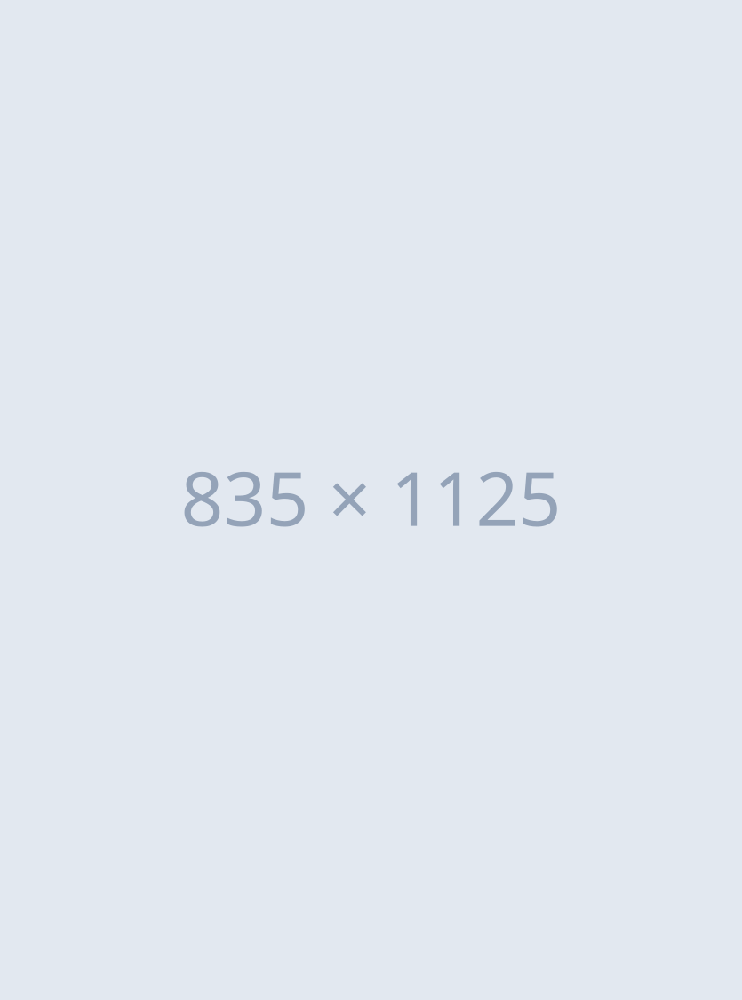
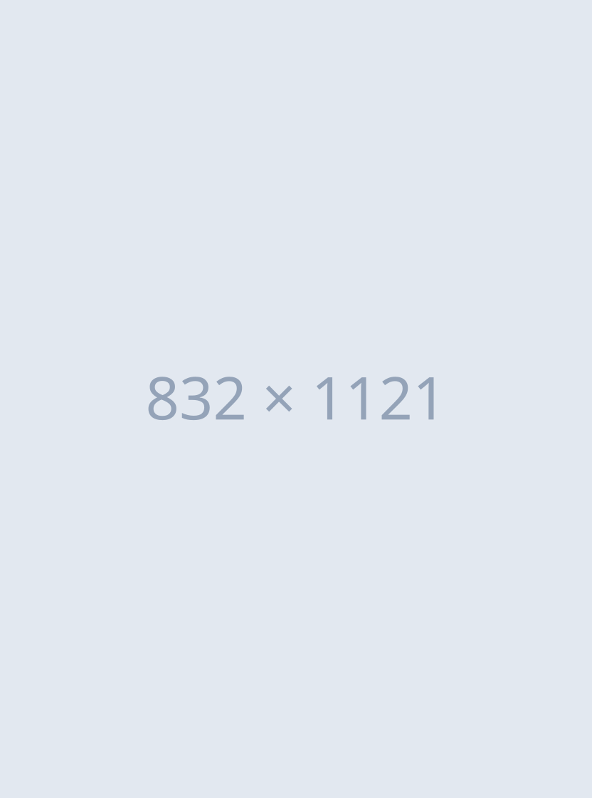
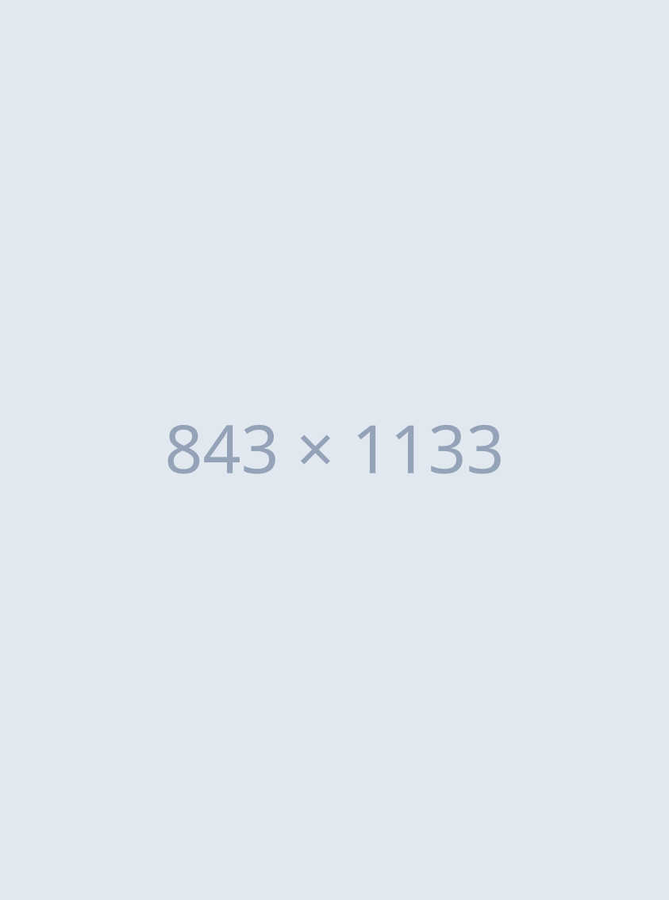

418 Hayes Street Built 1911, open since 2016
A brick warehouse, one fire.
Ten autumns on Hayes Street, cooking what Northern California's farms and boats send us each morning.
Since 2016
The room once stored coffee sacks. Now it smells of woodsmoke and rye.
Julian Ward came home to California after twelve years in kitchens in London, Copenhagen and Napa, and found the warehouse on Hayes Street with its floor still marked by the sacks. He built one fire where the loading door had been, and set fifty-eight seats around it.
We still cook the way we did that first autumn: we ring the farms on Monday, write the menu on Tuesday and change it on the night when the boats come back with something better.
- Seats around the fire
- 58
- At the chef's counter
- 8
- Bottles in the cellar
- 400
- Producers a week
- 24


The Kitchen
Lit at five, every service.
Almond wood from an orchard in Lodi burns down to coals by six. Most of the menu passes over it: the leeks, the duck, the bread for the crab.
The crates come in at seven each morning. Whatever arrives decides the day's prep list, and sometimes the menu.
Ten Autumns
How the house grew.
- 2016
The fire is lit
Fifty-eight seats, a menu of nine courses and four farms on the phone list.
- 2017
Dinner at Pell Ridge
The first producers' supper, cooked in the leek field for the people who grow them.
- 2018
The chef's counter
Eight oak stools built facing the pass, where the cooks bring each course across.
- 2019
A pastry kitchen
Clara Bennett arrives, and the madeleines become the last word of every menu.
- 2021
The cellar opens
The vault under the dining room becomes the wine room; Owen Price joins to fill it.
- 2023
The Hayes Room
The old office upstairs from the hall turns into a room for twenty.
- 2026
The tenth autumn
Twenty-four producers a week, most within a hundred miles of Hayes Street.

One Mile Away
The bay leaves come from a roof.
The Mission Rooftop Garden grows our herbs, flowers and the bay for Clara's ice cream, cut at eight and in the kitchen by nine. It is the closest of our producers, and the smallest.
What the Critics Wrote
The leeks alone are worth the walk up Hayes Street.
The Coastal TableA tasting menu that never once shows off.
West Kitchen ReviewBook the counter and watch the kitchen stay calm.
Supper NotesQuiet cooking, loud flavor, a fair wine list.
Bay Area Plate